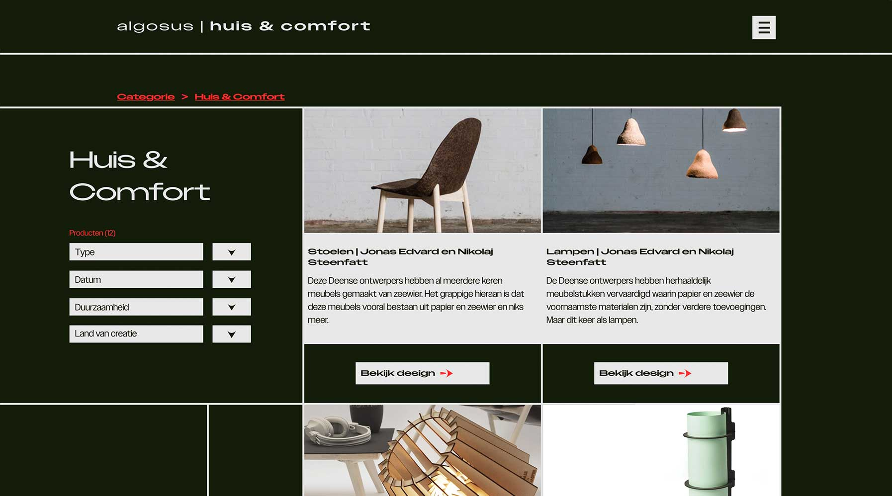
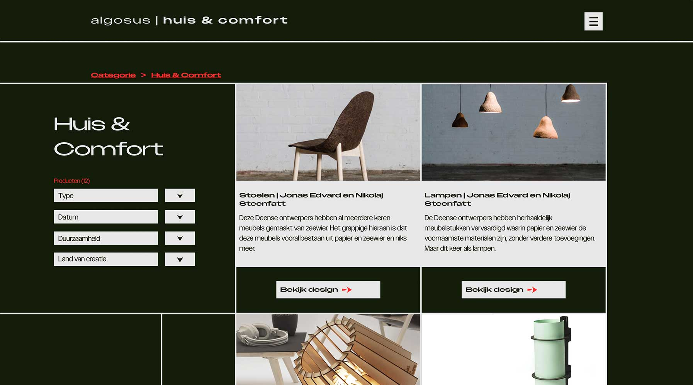

Voor het project Algosus ontwierp ik een website over duurzame toepassingen van zeewier, geïnspireerd door het zeewiertapijt van Nienke Hoogvliet. Na onderzoek bleek zeewier te worden gebruikt voor o.a. textielverf, biobrandstof en meubels—een thema dat me direct boeide.
De focus lag op kleurtheorie, compositie en een helder design. Ik wilde een scherpere visuele stijl neerzetten dan gewoonlijk, en paste met twee menu’s de 'one action per screen'-theorie toe voor een eenvoudige, duidelijke gebruikerservaring.